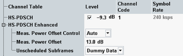

This section configures the HS-PDSCH.
For a multi-carrier scenario, all settings are available per carrier. For switching between the carriers, see "Select Carrier".

Signal level of the HS-PDSCH summed over all active codes, relative to the base level of the generator (see "Output Power (Ior)"). The checkbox enables/disables the HS-PDSCH.
The actual HS-PDSCH level is allowed to change from one TTI to another according to the reference power adjustment Δ defined in 3GPP TS 25.214, section 6A. The displayed HS-PDSCH shows the constant value corresponding to Δ = 0 dB. For a CQI channel configuration, the reference power adjustment is compensated for by a dynamic OCNS.
Option R&S CMW-KS401 is required.
Remote command:Defines the channelization code number of the HS-PDSCH.
For the HS-PDSCH, several code channels can be assigned to one UE. The channel table indicates the first code number only. Example: number of codes = 4, code number = 5 means code numbers 5 to 8 are used. The number of assigned codes depends on the HSDPA channel configuration, see "HSDPA Settings".
Option R&S CMW-KS401 is required.
For background information, see "Channelization Codes"
Remote command:Displays the symbol rate of the HS-PDSCH. This value is fixed.
Option R&S CMW-KS401 is required.
The measurement power offset Γ is signaled to the UE. The UE measures the P-CPICH power. The UE calculates the total received HS-PDSCH as follows:
PHS-PDSCH = PP-CPICH + Γ + Δ(CQI, UE Category)
The reference power adjustment Δ is only relevant for CQI channels and specified by 3GPP depending on the UE category.
In general, changing the measurement power offset causes an offset of the CQI values reported by the UE. The larger the offset, the higher the reported CQIs.
For more details see 3GPP TS 25.214, section 6A.
Option R&S CMW-KS411 is required.
- Manual: Γ is set manually via the second parameter. A manual setting can be used to report a wrong offset value to the UE and test its reaction, for example, by analyzing the returned CQI values.
- Auto: The correct value Γ is calculated automatically using the formula
Γ = PHS-PDSCH - PP-CPICH - Δ(CQI, UE category)
Defines the transmission in the gaps between consecutive HS-DSCH subframes allocated to the mobile (inter-TTI distance > 1).
Option R&S CMW-KS411 is required.
- "Dummy Data": The HS-DSCH power is maintained as specified in 3GPP TS 34.121 for CQI reporting tests.
- DTX: Discontinuous transmission in unscheduled HS-DSCH subframes (output power switched off)